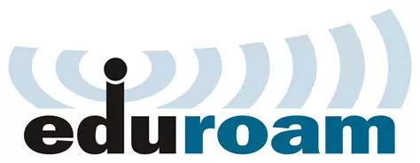
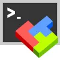

You will have to have 3 different accounts to complete the labs in this course; one in SUPR to handle the two other accounts, and one each at the compute centers PDC in Stockholm and UPPMAX in Uppsala.
1 SUPR
A SUPR/NAISS account is needed to create the accounts for the computers we will be using during the course. SUPR is also the system that you will handle your own projects in if you want to use this kind of resources in your research after the course.
If you do not already have one, create an account at SUPR/NAISS. Then, Log in to SUPR/NAISS, preferably using the SWAMID.
{kind=link}
Before proceeding with applying for project membership and user accounts, we have to accept the NAISS User Agreement. Do this by clicking the Personal Information link in the left sidebar menu. The scroll down a bit until you reach the section User Agreements. If you already have accepted it the State will be a green box with the text Accepted in it. If it is anything else, click it to start the accepting process.
This is where you might run into trouble if you don’t have a SWAMID connected account. You will not be able to accept the user agreement online without it, so you will have to send in your acceptance in paper form together with a copy of your passport. This process can take a week or more, so please make sure you can accept the user agreement in good time.
2 UPPMAX
Remote computing cluster UPPMAX will be use as a fallback cluster, if there should be any problems at PDC. After making sure you have an accepted user agreement, go to the SUPR/NAISS Projects page and request membership to the project ID: naiss2024-22-1375
{kind=link}
Once you are accepted to a project, you should see that project listed under your active projects.
{kind=link}
Finally you need to request a login account to UPPMAX. This will be the account you use to log in to the actual computers, so it is not the same as your SUPR account. Login to SUPR and go to the Accounts page. Under the Possible Resource Account Requests heading click on Request Account on Rackham @ UPPMAX button and confirm it on the next page. If it is missing from this page, it could be because you already have a login account created (only 1 account per person allowed), or that you have not yet gotten your project memberships approved.
Checking your request and approving your account requires some manual work, so you might have to wait for some time (up to a working day) before the next step. When the account is ready to be created, you will receive an email to your registered email address (shown in your SUPR contact information) with information on how to proceed. You will get a one-time URL that you use to get the password (within seven days) to login to the cluster with. The link is only valid for 1 visit, so write down the password you get. When that has been done, the account ready for use within 15 minutes and you can then login using your password. Once you have logged into the cluster you can change your password by typing passwd in the terminal and follow the instuctions.
You will get one username & password for the account on UPPMAX, and one username and password for the account on PDC. Please keep track of both, we will tell you when to use which account during the workshop.
3 PDC
Remote computing cluster Dardel at PDC in Stockholm will be use for data analyses. A PDC account is needed to use these resources. Normally you would do this the same way as when you applied for the UPPMAX account above, but PDC handles uses for their courses through another system. If you do not already have a PDC account, please fill in the form at https://blackfish.pdc.kth.se/cgi-bin/accounts/request.py at least 2 weeks before the course start and use the same email that you applied to the course with. Fill in your personal information, as well as this information about which course it is:
| Lecturer/ Project Leader: | Martin Dahlö |
| Course / Project Title: | edu24.uppmax |
We have notified PDC who the students for our course is and they will create the account needed to login to their computers. Follow the instructions you get from them to complete your account creation. The morning session on the Monday of the course will cover how to connect to PDC, a bunch of steps that might not be trivial for novice users.
4 Install tools
4.1 Eduroam
 Please make sure you have a working Eduroam wifi connection setup before the course, since we will only have wifi internet access in the computer room where we have the course. The instructions on how to get it working could differ university to university, so please refere to you home university’s instructions on how to do that. Try searching for “eduroam” and your home university, e.g. eduroam uppsala university, to find it.
4.2 ThinLinc
ThinLinc allows graphical connection to UPPMAX. Download and install from https://www.cendio.com/thinlinc/download.
4.3 XQuartz
Mac users will need to download and install XQuartz for X11 forwarding. ie; to forward remotely opened windows to local machine.
4.4 MobaXterm*
 If you are on a Windows system, and you want to open graphical applications from the terminal, we recommend MobaXterm. It is recommended that you INSTALL the program and not use the portable version. MobaXterm also has an integrated SFTP file browser.
4.5 Filezilla*
When you need to transfer data between the remote cluster and your computer, you can use the tools SCP or SFTP through the terminal. Windows users can use the SFTP browser available with MobaXterm. If you prefer a GUI to upload and download files from the remote cluster, we recommend installing FileZilla.
* Optional
5 Connect to UPPMAX
See Connecting to UPPMAX instructions listed on the Contents page.
If you want to get a primer on using the terminal, you can get started with the following Tutorial One at this link Unix tutorial for beginners. You can use https://scilifelab.github.io/courses/ngsintro/common/emu/ (or this mirror) to try the commands in the tutorial, so that you don’t mess up any real world system. If you have any questions regarding this tutorial contact: martin.dahlo [at] nbis.se.
5.1 Create a user folder
This part is only to be done on UPPMAX, and NOT at PDC.
Once you have logged in to UPPMAX, run the following command.
mkdir /proj/naiss2024-22-1375/nobackup/$USERThis creates a directory with your user name. You will work inside this directory for the workshop. If you cannot write to the folder, the most likely reason is that you have not requested access to the workshop project via SUPR. This is described in step 1 above.
It may take an hour or so from request approval, before you can actually write to the folder. We will check before the workshop that all students have logged in and done this, so do not forget!